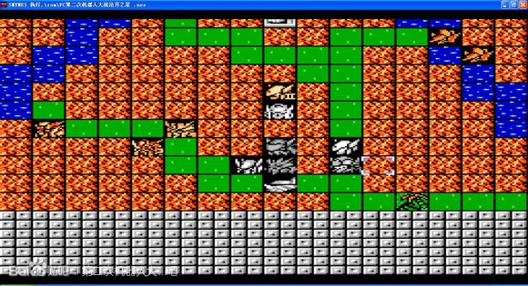
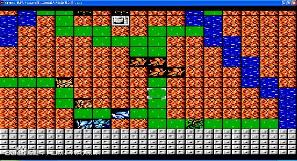
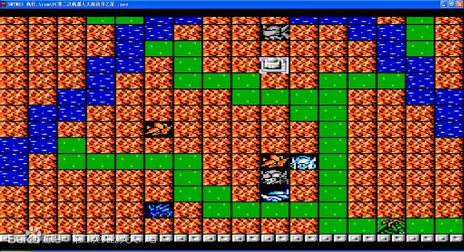
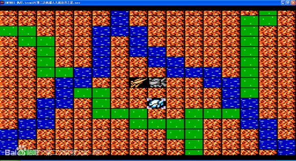
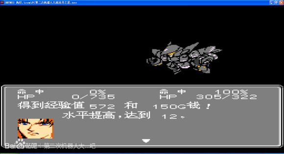

第三话 袭・逆转战
站好位 清小兵
boss出场后来恩也来支援 配合近远程攻击 先灭一个
尽量让来恩、艾克塞林升级
几个利奇让来恩抗一下攻击 2个回合全部反击爆

图标指针为来恩

打爆三个boss后 天岛与瓦修还有两架F12会下来 逐一歼灭血量不多可以用毅力或者反击后第二回合主动攻击 来恩上加血机体
艾克塞林也一起上去 准备打boss
艾克塞林主动攻击boss 的时候用个回避



本关结束后 卡卡利 暂时离队...